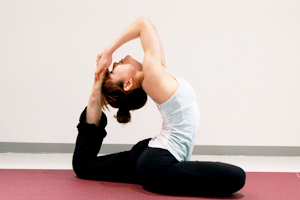
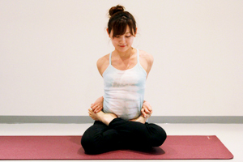
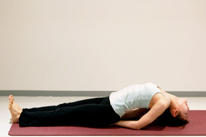
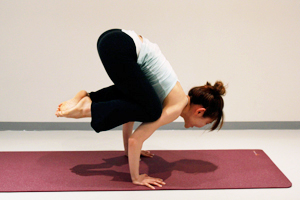
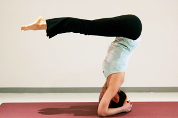
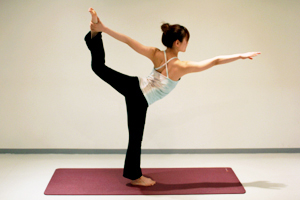
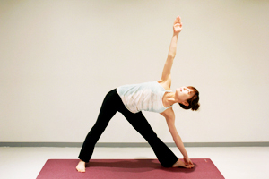
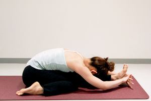
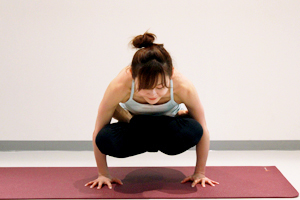
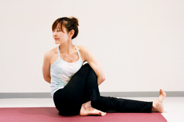

鳩のポーズ
カポタアーサナ バリエーション

- 難易度
- ★★
カポタアーサナから、後ろの足をお尻の方に曲げ両手で上から足を掴み、背中を反らせながら頭を足につける。

カポタアーサナから、後ろの足をお尻の方に曲げ両手で上から足を掴み、背中を反らせながら頭を足につける。

右足を左足の付け根へ、左足を右足の付け根へ預けパドマを組む。 左手を後ろに回し右足の親指を掴む。右手も後ろに回し左足の親指をつかむ。

両手のひらをマットにむけ、そのまま腕を体をの下にしまいこむ。 両肘でマットを押し胸を開く。頭をマットにつける。

両手を肩幅にマットにつけ、両膝を腕に当てる。（脇に近ければ近いほど良い） お腹に力を入れながらゆっくり腕に体重をかけ、腕に乗っていく。 足先をつけて斜め前を見てバランスをとる。

シルシアーサナからお尻を引くイメージで足を90度の角度まで降ろしていく。

左手で内側から左の足を持ち、足を真後ろに蹴り上げる。 胸を起こし、背中をカーブさせる。

足を広く開き、右足先を90度外側に向け、左足先も少し内側に向ける。 右手で右足の持てるところを持ち、左手を上に伸ばす。

右足を外側に折りたたみ、左足先は天井に向ける。 息を吐きながら体を前に倒す。 右のお尻が浮き過ぎないように注意する。

パドマーサナから、足を胸に近づけお腹に力を入れたら両手でマットを押し体を浮かせる。

ダンダーサナの状態から、右膝を立てツイストしながら左手を右足にかける。 後ろで右手を掴んだら右のお尻をマットに降ろして胸を開く。